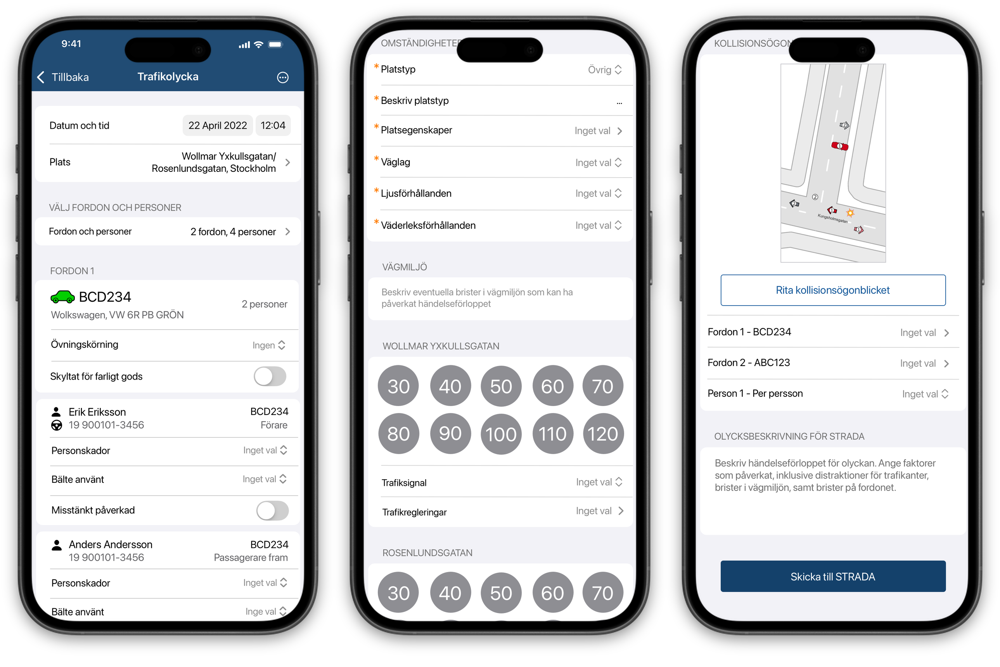
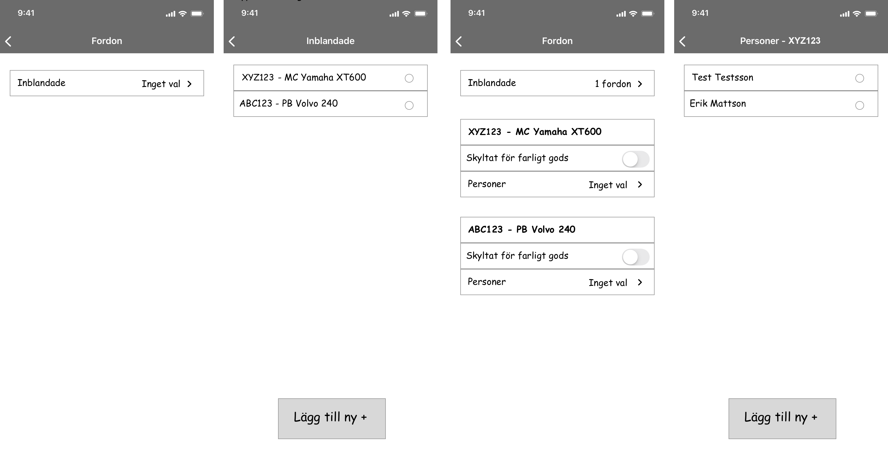

Rebuilding traffic accident reporting for the Swedish Police
Overview
I led the work for rebuilding the flow of reporting traffic accidents on the scene. From setting scope to designing possible solutions and leading the work of implementation through two cross-functional teams.
Note: All screens contain test data only — no real people, vehicles or cases. Nothing shown is confidential.
Problem
The current app for reporting traffic accidents led to inefficient work for the officers and its suboptimal output led to unnecessary work for caseworkers and statistics handlers that used the app's output.
This project connected to the Police IT department's goal of "decreasing unnecessary admin time for operational staff".
Outcome

Shipped in 2024. Follow-ups after release concluded:
- Reporting was dramatically faster.
- Officers stopped getting stuck in the UI.
- The flow went from a burden on the scene to something officers finished when it best suited them.
- Real-time collaboration turned the flow from a bottleneck into teamwork.
- Casework could start directly while officers were still working the scene.
- No decline in the quality of the statistics output from the app.
Process
Goals and scope
I set up a forum with experts from each role that handled the data — officers, caseworkers and statistics handlers — to help set the scope and for continuous communication throughout the work.
With the expert group I narrowed the goal down to Decrease reporting time for accidents involving max 3 vehicles which was found to account for roughly 85% of the reported accidents. With the secondary goal of increasing quality of data sent for statistics and casework, or at the very least keeping it at the same quality.
Research
- I frequently queried the Swedish traffic accident database (the same database as the app was reporting to) to find common denominators for accidents reported by officers on the scene. Initially I used it to narrow down the scope, later on I used it to optimize the user flow.
- I carried out three ride-alongs and around 10 interviews with officers to gain insight into officers' pain points with the current app.
- Since no traffic accidents occurred in the initial ride-alongs, I decided to set up two staged accident scenarios with people playing the drivers and witnesses involved, and officers working the case reporting through the app.
- I performed interviews with caseworkers and statistics handlers to understand how the output from the app was used.
Discoveries
- The digital sketch of the accident was the main pain point for all three roles involved
- Information that didn't yet exist had to be filled out before casework could continue which caused bad data quality
- Two or more officers always worked the scene, but only one of them could use the app to fill out the information, which caused major inefficiency
- Officers were frequently struggling to get an overview with the heavy hierarchical navigation in the app
Decisions
- Build this flow into another already existing police appI initiated contact with the team of another app that already had a lot of the functionality that solved our problems. Together with business analysts, product managers and developers from both teams as well as the expert group we decided to build the traffic accident reporting into their app. By doing so we could send data continuously for collaboration and casework, and to statistics handlers at a later stage when all data had been acquired.
- Do minimal work in sketch componentDue to technical debt I decided together with developers to rule out a complete rework of the sketch and instead only increase the zoom level. I considered this the most impact for the least amount of effort, since the officers' main issue with sketching was that they could not fit the whole accident inside the sketch component.
- Make hierarchy as flat as possibleMade for better overview. Page being too long was no problem for accidents with max 3 cars.

My initial idea of a hierarchical flow was rejected in user testing. Having all info on one page was preferred by 14 out of the 15 officers tested.
What I'd do differently today
Function over aesthetics
I chose, for example, to keep text sizes and colors at the iOS standard because they looked good, accepting the risk that they'd work less well in difficult light conditions. Today I'd pick function every time when making trade-offs between function and aesthetics. I've realized that for work tools, users want to look at the app as little as possible and just finish the task without any obstacles.
Don't be afraid to be different
Initially I modeled navigation after other internal apps, none of which had an extremely flat hierarchy. It wasn't until a developer suggested putting literally everything on a single page that I prototyped the fully flat layout that won in user testing. Today I'd focus less on how other similar apps look and prototype and test the extremes directly.